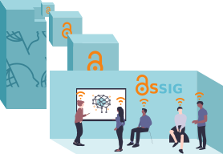
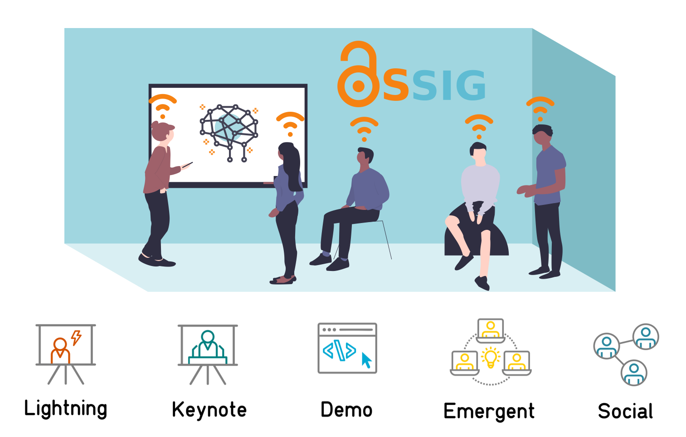

Welcome to the OSR!

The OS-SIG Open Science Room (OSR) is a conference within a conference. It is part of the Organisation for Human Brain Mapping (OHBM) annual meeting.
The OSR aims to be a welcoming and inclusive space for discussion around open practices within neuroimaging and science more generally. Joining in with the activities of the OSR is a key opportunity to connect with others in the community, learn from each other, and start collaborations to build a more inclusive, transparent and future-ready scientific field.
A virtual meeting with global access!
This year the OHBM meeting and OSR will be open for virtual attendance only!
The OHBM meeting runs from Tuesday 23rd June 2020 to Friday 3rd July 2020, for two weeks instead of the usual five days, to give all virtual attendees full opportunity to soak up the experience without being glued to your screens for nine hours per day!
The OSR kicks off with a welcome party on Monday 22nd June 2020 and runs in parallel to the OHBM program, with almost no overlaps between the two schedules.
For increased global accessibility, the daily OSR schedule repeat three times per 24 hours, once per time zone hub.

The OHBM meeting will be hosted on an interactive virtual platform, with opportunities for networking alongside the standard keynotes, symposia, exhibitor booths, and poster sessions.
OHBM registrants will be able to access the OS-SIG's Open Science Room via this platform, alongside the rest of the OHBM meeting content.
To reduce barriers to access, the OSR talks, discussions and interactions this year will also be available for free accross all timezones, serving our global community.

OHBM registrants will have full access to the OSR via the virtual conferencing platform.
If you are registered to attend OHBM, you do not have to register additionally via the OSR website.
Zero cost participants can register via the OSR website to gain free access to OSR content and interactions.
What happens in the OSR?
The OSR hosts content in various formats: short lightning talks, longer 'keynote' talks, software demonstrations, and emergent discussions, all centred around themes relevant to open science practices in our discipline.
Emergent sessions can be booked now or during the meeting itself via the submit page.

Talks, discussions and demonstrations in the OSR will be fresh, relevant and challenging.
We aim to address new and emerging topics, fields and concerns, along with big picture issues in open science.
The OSR is also a space to meet, hang out, work and collaborate! We aim to create virtual group working and interaction spaces, to support you in making real connections with other virtual attendees.
Who should come to the OSR?
The OSR is a space for everyone. We come with diverse skill sets, experiences and viewpoints, and we can all learn something new!
We expect visitors to the OSR to comply with the Code of Conduct for the OHBM annual meeting.
These behaviours are aligned with open science practices of sharing, collaboration, and inclusivity.
In the OSR we aim to model an academic community we wish to be a part of, where we interact with each other with curiosity, kindness and respect.
Registration and participation
To join the OSR, register now.
Registration is open for the duration of the event, and is required for zero-cost attendance.
After registration, you will receive the information necessary to access OSR talks and discussions.
Note: separate OSR registration is not required for those already registered for the OHBM meeting, as they will receive the necessary information to connect to the OSR via the virtual conferencing platform.
Participation in the OSR will happen across several platforms.
OHBM registrants can view OSR content and interact with the community from within the virtual conferencing platform.
Both OHBM and Zero-cost participants will be able to join the interactive program via Crowdcast.
Crowdcast allows us to stream all our pre-recorded talks, have live question-and-answer sessions with speakers, and interact via text and video with our global community.
We'll additionally make a text based Mattermost environment available for chats with speakers and each other, and asking our Open Science experts and staff for help.
For informal social activities, a core part of a scientific conference, we'll use Gather.town, which was a great hit at the recent virtual OHBM Brainhack.
How to get in touch!
We would be very pleased to hear from you to discuss any aspect of the OSR! Our communication channels are listed here.

 {% endif %}
{% endif %}